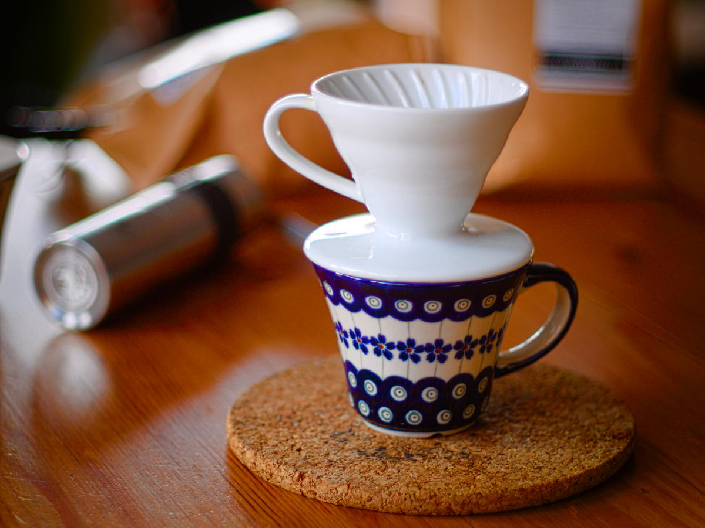
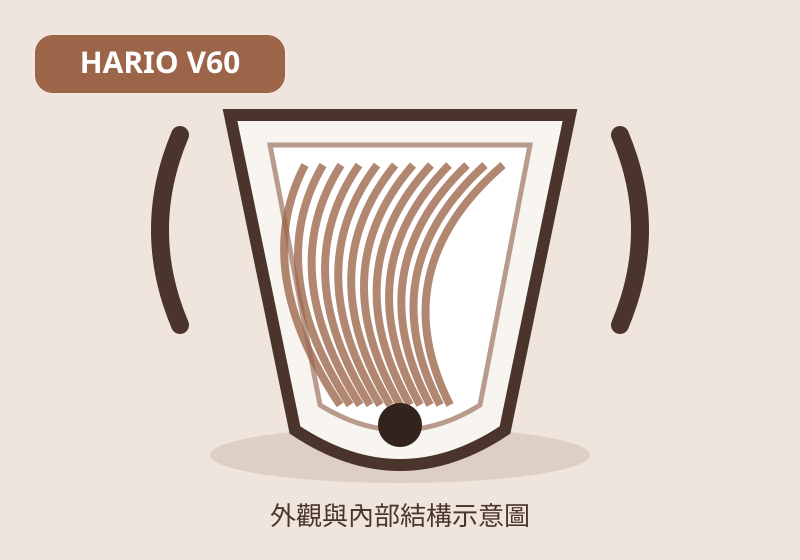
DRIPPER GUIDE
Hario V60
圓錐形｜單一大孔｜螺旋肋骨
內部結構
肋骨由底部延伸至上緣，讓濾紙與杯壁之間保留空氣通道。大孔設計不主動限制流速，萃取速度主要由研磨、注水與粉層控制。
風味傾向
香氣奔放、酸質清晰、層次感強。適合淺焙與希望凸顯產區特色的咖啡。
技巧自由度高，但對注水穩定度較敏感。
從外觀、內部肋骨、孔洞與底部形狀，理解不同濾杯如何改變排氣、流速、粉層與最終風味。
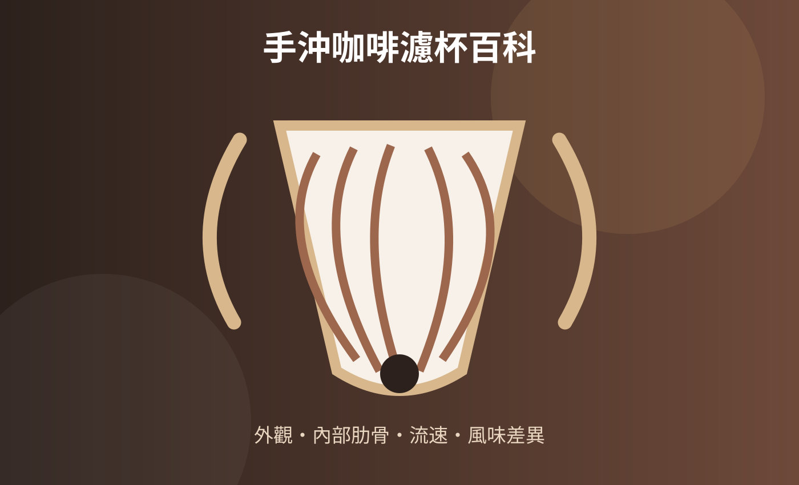
濾杯的差異不只是造型。內部肋骨決定排氣與濾紙貼合程度；底部形狀影響粉層厚度；孔洞控制排水阻力；濾紙則進一步改變流速與口感。


圓錐形｜單一大孔｜螺旋肋骨
肋骨由底部延伸至上緣，讓濾紙與杯壁之間保留空氣通道。大孔設計不主動限制流速，萃取速度主要由研磨、注水與粉層控制。
香氣奔放、酸質清晰、層次感強。適合淺焙與希望凸顯產區特色的咖啡。
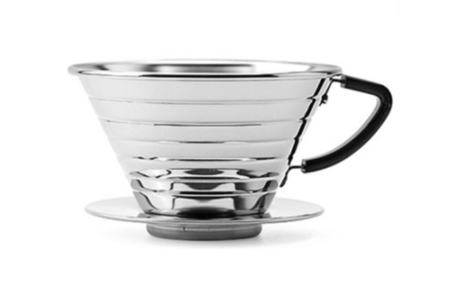
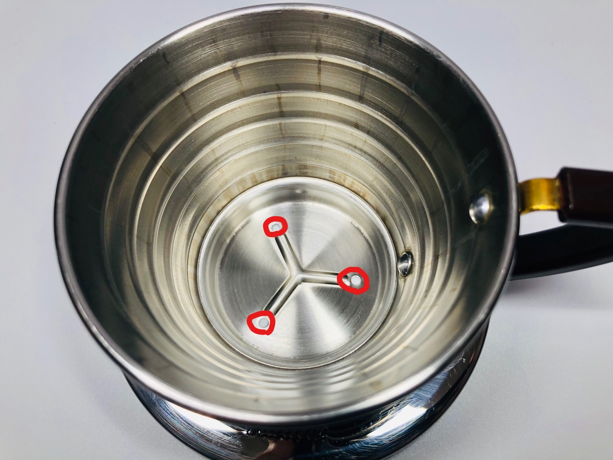
平底形｜三孔｜短肋骨
平坦底部讓咖啡粉層厚度較一致，三孔排水搭配波浪濾紙，降低濾紙貼壁造成的阻塞。
甜感明顯、口感圓潤、萃取均衡。
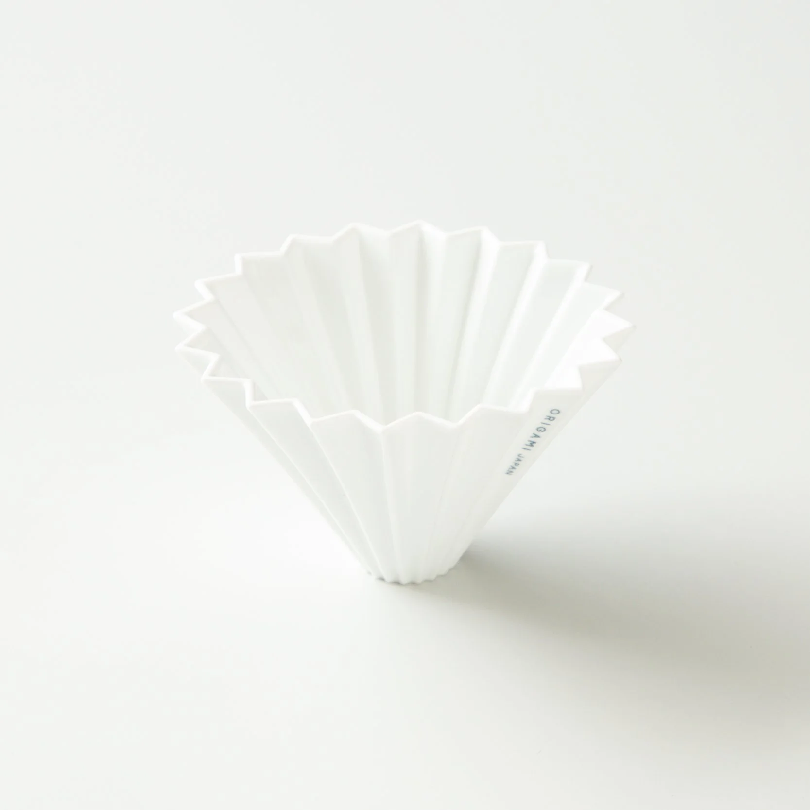
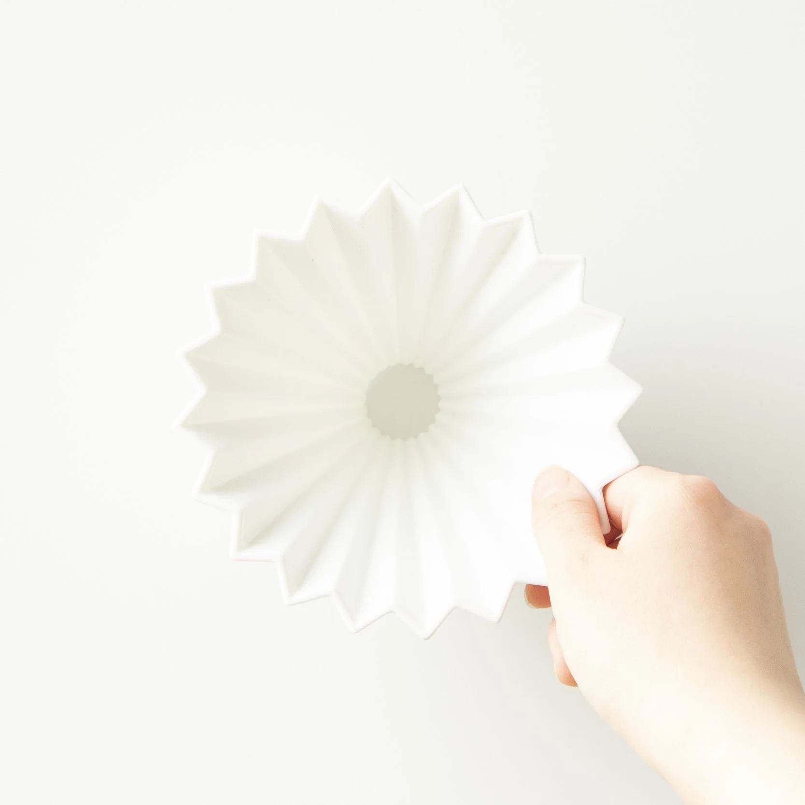
圓錐形｜單孔｜深直肋骨
大量垂直肋骨形成寬闊排氣通道，可搭配錐形或波浪濾紙，改變粉層與流速。
錐形紙偏明亮通透；波浪紙偏甜感與均衡。
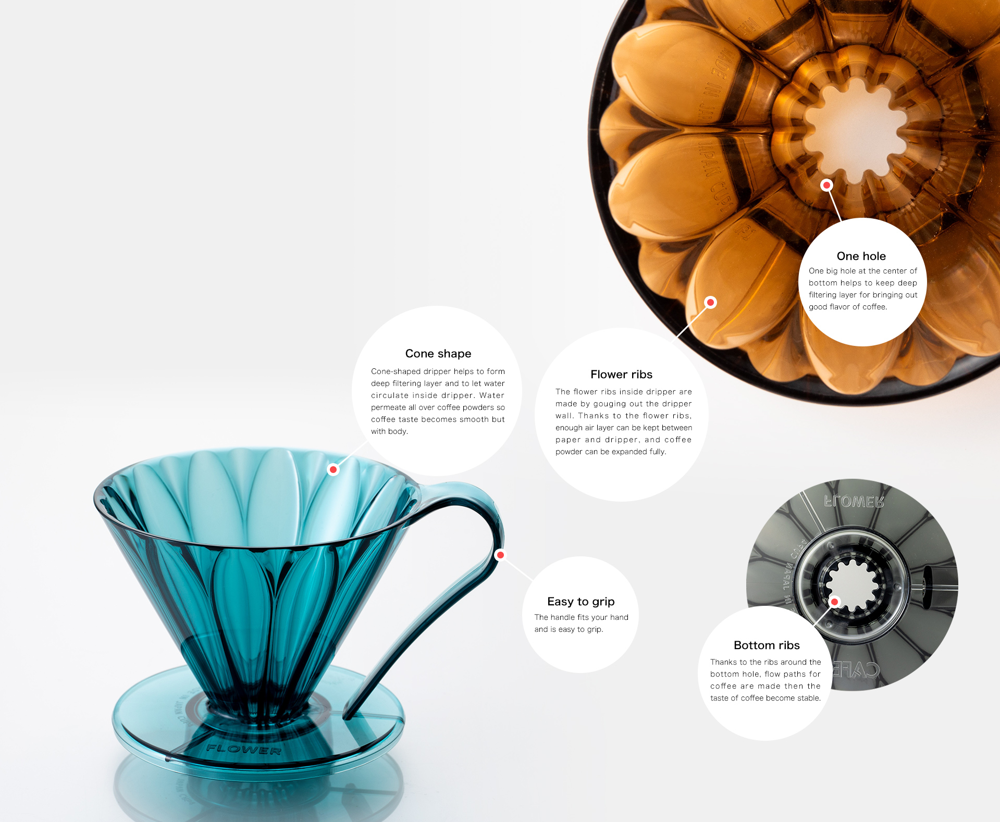
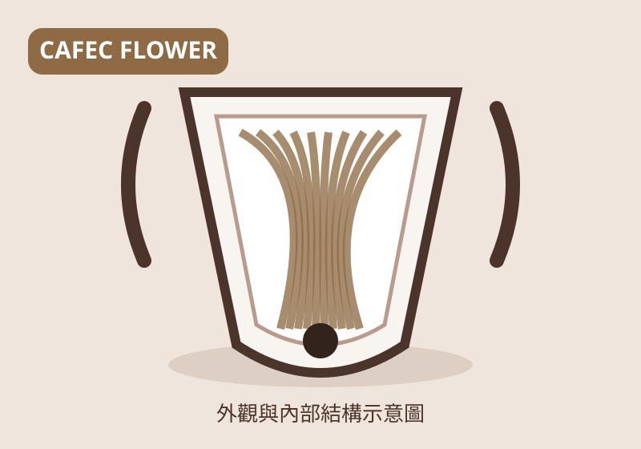
圓錐形｜單孔｜花瓣肋骨
花瓣狀溝槽讓濾紙只在局部接觸杯壁，增加空氣與水流通道，減少液體停滯。
甜感清楚、香氣完整，兼具明亮感與厚度。
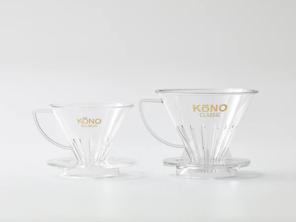
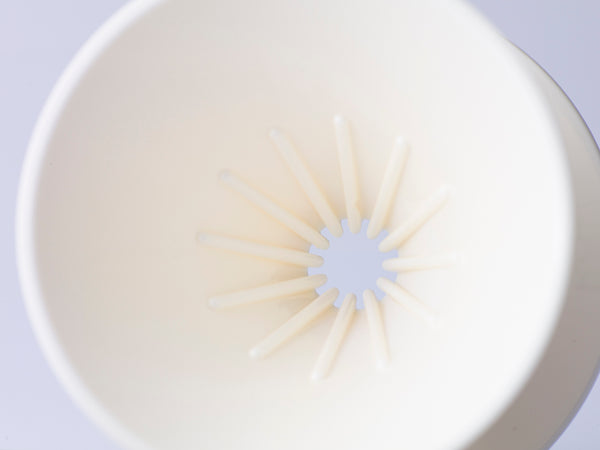
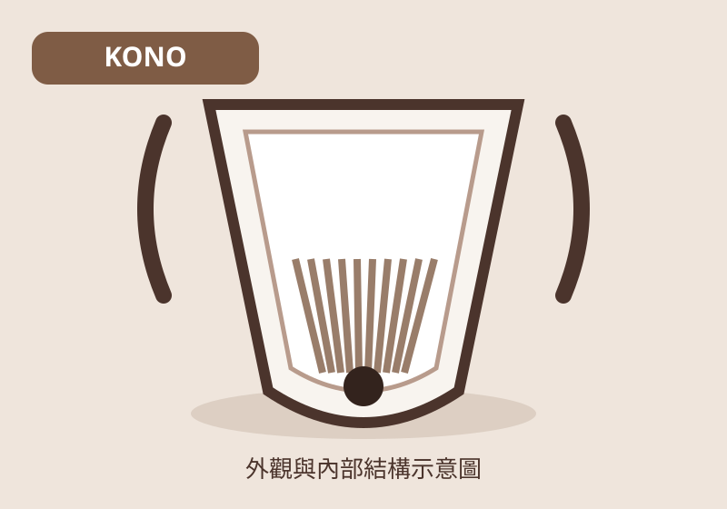
圓錐形｜單孔｜下半部短肋骨
上半部濾紙較貼近杯壁，下半部才有肋骨，水流與氣體集中於底部排出。
甜感集中、醇厚度高、風味凝聚。
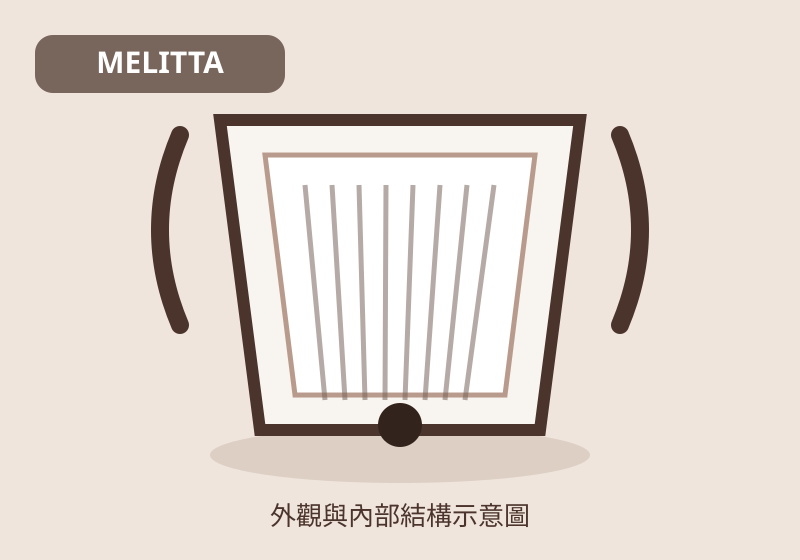
梯形｜一孔或多孔｜淺肋骨
梯形粉層搭配較小排水孔，濾杯本身會限制流速，操作較容易穩定。
苦甜平衡、口感柔和，風味較傳統。
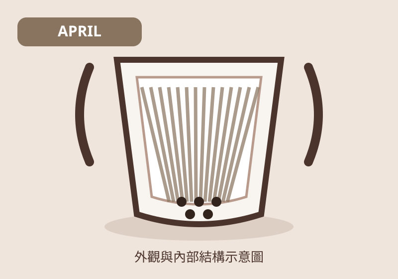
平底形｜多孔｜放射結構
寬平底使粉層均勻，多孔底部能快速排水，通常搭配專用波浪濾紙。
甜感乾淨、酸質柔和、風味清楚。
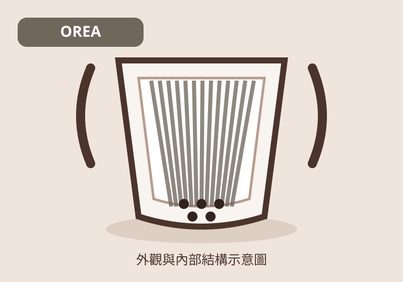
平底形｜多孔｜低壁結構
低矮杯壁與大面積排水區降低阻力，部分版本可更換底部零件調整流速。
乾淨、甜感高、萃取效率佳。
| 濾杯 | 形狀 | 孔洞 | 內部肋骨 | 流速傾向 | 主要風味 | 操作難度 |
|---|---|---|---|---|---|---|
| Hario V60 | 圓錐 | 單一大孔 | 長螺旋肋 | 快、可控制 | 明亮、香氣、層次 | 較高 |
| Kalita Wave | 平底 | 三孔 | 短肋 | 中等穩定 | 甜感、圓潤、均衡 | 低 |
| ORIGAMI | 圓錐 | 單孔 | 深直肋 | 中快 | 可依濾紙變化 | 中 |
| CAFEC Flower | 圓錐 | 單孔 | 花瓣肋 | 中快 | 甜感、香氣、乾淨 | 中 |
| KONO | 圓錐 | 單孔 | 下半部短肋 | 中慢 | 甜感集中、醇厚 | 中 |
| Melitta | 梯形 | 一孔／多孔 | 淺肋 | 偏慢 | 平衡、柔和 | 低 |
| April | 平底 | 多孔 | 放射結構 | 中快 | 清楚、甜感、柔和 | 中 |
| OREA | 平底 | 多孔 | 低壁直肋 | 快 | 乾淨、高萃取、甜 | 中高 |
初學者：Kalita Wave 或 Melitta，流速較穩定，沖煮容錯率高。
希望表現淺焙花果香：Hario V60、CAFEC Flower 或 ORIGAMI。
喜歡甜感與醇厚：KONO 或 Kalita Wave。
喜歡研究參數與快速流速：OREA、April 或 ORIGAMI。
本頁以實際產品照片搭配原創結構示意圖，協助比較濾杯外觀、內部肋骨與孔洞配置；產品細節可能因尺寸與版本不同而略有差異。
返回咖啡知識庫本頁將引用資料集中列於最後。產品名稱與商標權利屬原品牌所有；實際產品照片僅供咖啡教育與結構辨識使用。其餘濾杯結構示意圖由 Kaffa98 咖啡知識庫製作。
不同尺寸、材質與版本可能在肋骨、孔洞或底座細節上略有差異。選購與教學時，應以各品牌當期官方產品資料為準。